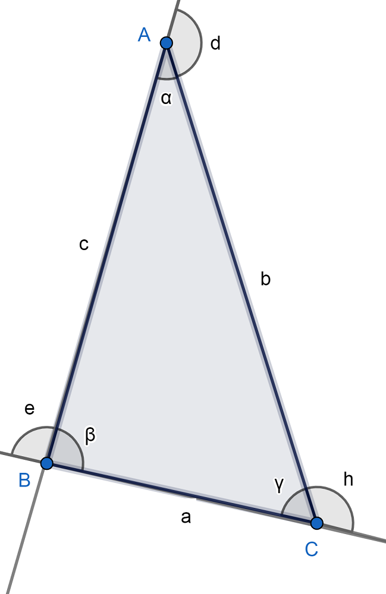
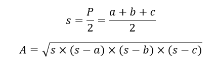

Triángulo Acutángulo
El triángulo acutángulo es aquel cuyos tres ángulos interiores son agudos, es decir,
miden menos que 90º.
Esta categoría de triángulo es un caso muy particular dentro de los tipos de triángulo según la
medida de sus ángulos internos.
En este punto, vale recordar que el triángulo es un polígono, es decir, una figura geométrica
bidimensional que se constituye de la unión de distintos puntos (que no formen parte de la
misma línea) mediante segmentos de recta. De ese modo, se construye un espacio cerrado.
Elementos del triángulo acutángulo
Guiándonos de la figura de abajo, los elementos del triángulo acutángulo son los siguientes:
- Vértices: A, B, C.
- Lados: AB, BC, AC.
- Ángulos interiores: ∝, β, γ. Todos suman 180º.
- Ángulos exteriores: e, d, h. Cada uno es suplementario al ángulo interior del mismo
lado. Es decir, se cumple que: 180º= ∝+d= β+e= h+γ. Lo anterior quiere decir que todos
los ángulos exteriores son obtusos (mayores que 90º).

Tipos de triángulo acutángulo
Los tipos de triángulo acutángulo, según la medida de sus lados, son los siguientes:
- Equilátero: Todos sus lados miden igual y sus ángulos interiores también son iguales y
miden 60º. Las tres alturas, respecto a los tres lados, son ejes de simetría. Esto significa
que dividen a la figura en dos triángulos iguales.
- Isósceles: Dos de sus lados miden lo mismo y el otro es distinto.
- Escaleno: Todos sus lados y ángulos interiores son diferentes.
Perímetro y área del triángulo acutángulo
Las características del triángulo acutángulo se pueden medir en base a las siguientes fórmulas:
- Perímetro(P): Es la suma de los lados que, según la figura de arriba donde señalamos
los elementos, sería: P=a+b+c
- Área(A): En este caso, nos basamos en la fórmula de Herón donde s es el semiperímetro,
es decir, P/2.
